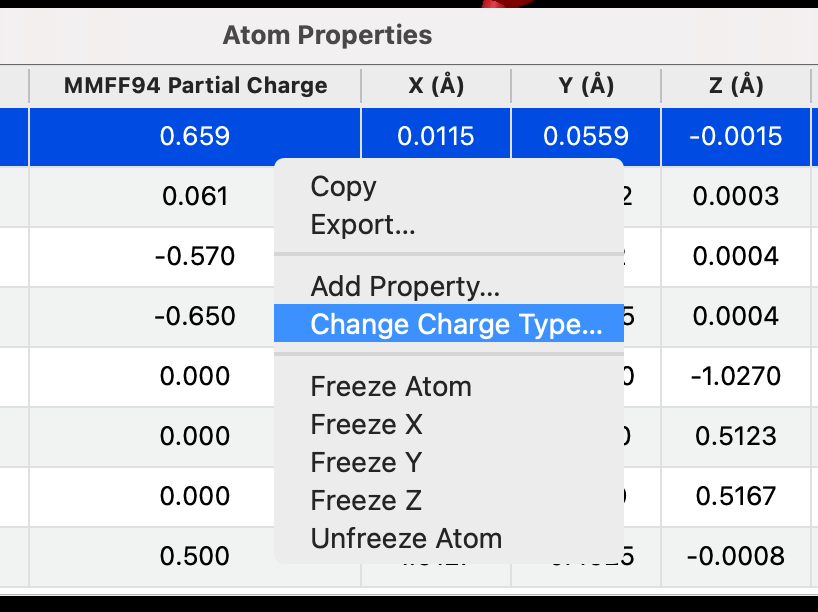
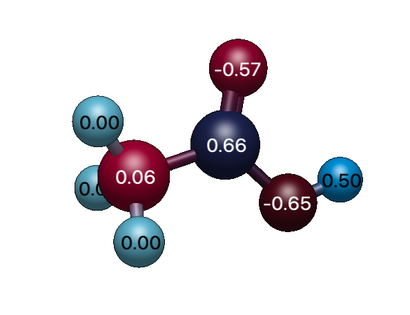

Calculating, Viewing and Exporting Partial Charges#
Avogadro can assign partial atomic charges with several built-in models, read the charges computed by a quantum chemistry program, and get charges from external programs through plugins. This tutorial shows how to choose a charge model, look at the charges, and export them.
Where Charges Come From#
- Built-in models
Avogadro uses Open Babel to offer several fast empirical models: Gasteiger, MMFF94, EEM, EEM 2015 and EQEq. Each one only appears for molecules whose elements it supports.
- Quantum chemistry output
When you open the output of a quantum chemistry calculation (for example, from ORCA or MOPAC, or a CJSON or QCSchema file), any charges in the file (e.g., Mulliken or Löwdin charges) are read in and listed as their own charge types.
- External programs, through plugins
Plugins can add more charge models that run an external program or Python package, such as semi-empirical or machine-learning charges. Install them with
Extensions⇒Manage Plugins…and look for the ⚡ (Electrostatic Models) feature. See The Plugin Manager.
View the Charges#
Open or build a molecule. For this example, insert acetic acid (
Build⇒Insert⇒SMILES…and typeCC(=O)O).Choose
Analyze⇒Properties⇒Atom Properties….
The Partial Charge column shows the charge on each atom, and its header names the model in use (e.g., “Gasteiger Partial Charge”).
To use a different model, right-click in the table and choose Change Charge Type…, then pick a model from the list.

Note
Different charge models can give quite different charges for the same atom. Partial charges aren’t observable quantities, so there’s no single “right” answer. Use the model that matches what you’ll do with the charges, for example the charges expected by a particular force field.
Color Atoms by Charge#
To see the charge distribution at a glance, choose View ⇒ Color Atoms ⇒ By Partial Charge…, then choose the charge model and the color map. Negative and positive charges are shown in contrasting colors. Choose View ⇒ Color Atoms ⇒ By Element to go back to the usual colors.

The charges can also be used to color a molecular surface by electrostatic potential. See Viewing Electrostatic Potential Maps.
Export the Charges#
To save the charges (for example, to use in a spreadsheet, a script, or another program):
In the Atom Properties table, choose the charge model you want (as above).
Right-click in the table and choose Export….
Choose a file name. The whole table is saved as a CSV (comma-separated values) file, including the element, the partial charges, and the coordinates of each atom.
To copy just some of the atoms instead, select their rows, right-click and choose Copy, then paste into a spreadsheet or text editor. The columns are separated by tabs.
Warning
CSV export writes locale-formatted numbers; in a decimal-comma locale the columns may be split. Tab-separated is safer.
Tip
Charges are shown, copied and exported to three decimal places.
Charges read from a quantum chemistry output file are also kept when you save the molecule in Avogadro’s CJSON format.
Add Charges From Your Own Program#
If you have your own program or script for computing charges, you can add it to Avogadro as a plugin. A charge plugin is a Python script that receives the molecule (for example, in CJSON or XYZ format) and returns a list of charges, one per atom. Once installed, its model appears under Change Charge Type…, in Color Atoms by Partial Charge, and for electrostatic potential surfaces like any built-in model. See Setting Up Python to get started.
See Also#
Atom Properties – The Atom Properties table
Viewing Electrostatic Potential Maps – Viewing electrostatic potential surfaces
The Plugin Manager – Installing plugins